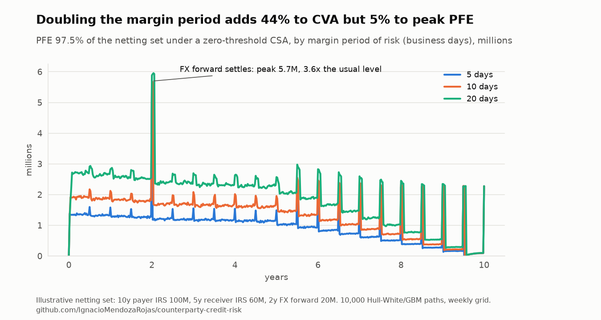
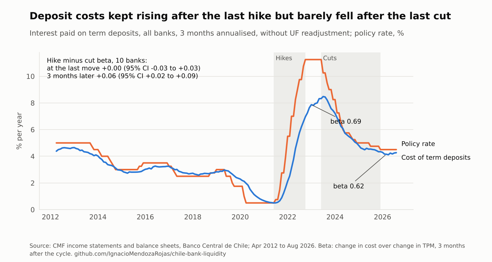
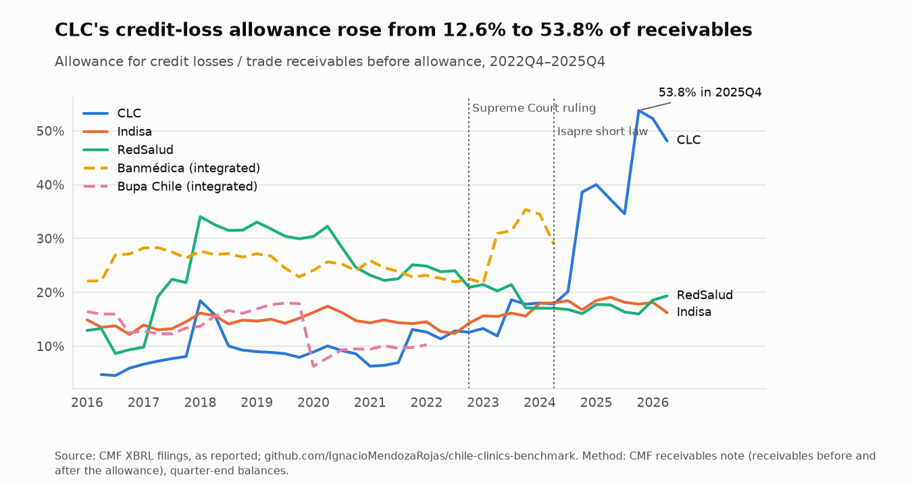
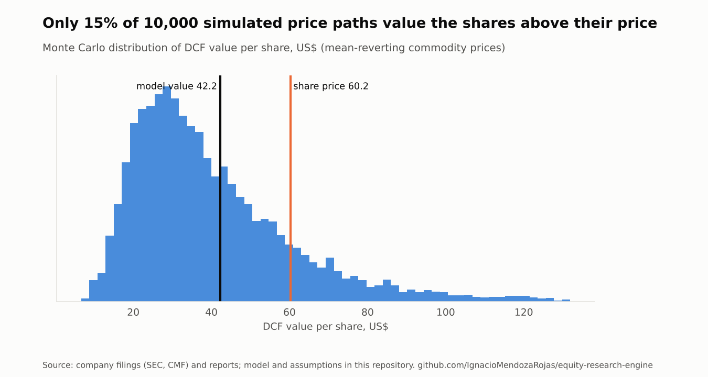
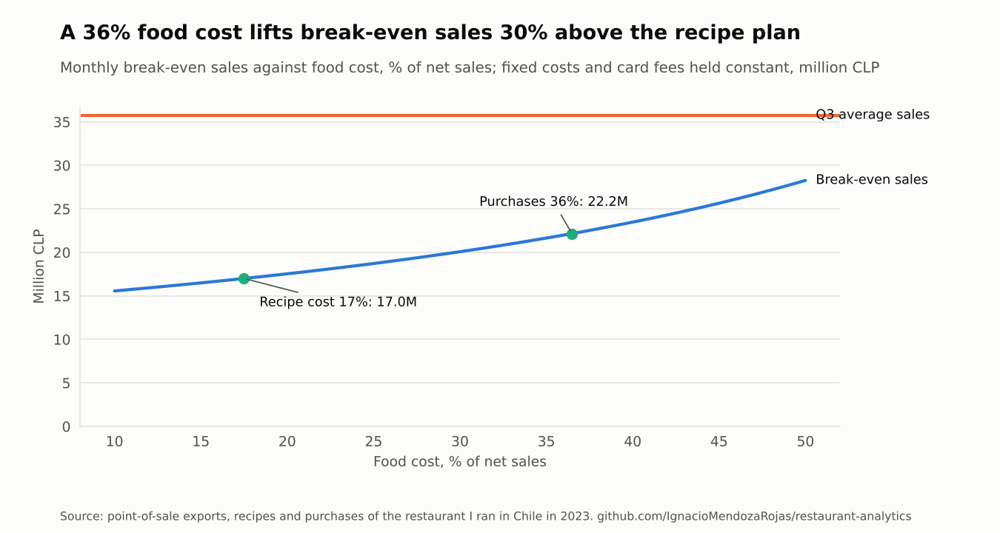
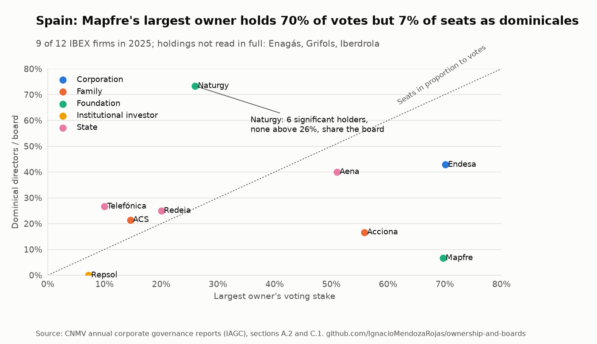

Ignacio Mendoza Rojas
Financial Risk & Modelling Analyst at Banco Ripley, based in Barcelona
I build risk and valuation models, and the data infrastructure that feeds them. Five years in banking and corporate finance: counterparty and liquidity risk at Banco Ripley, and financial planning and investment evaluation at Red Interclínica in 2023, between my two roles at the bank.
Each section below is one competency, led by what it found: the finding, why it matters, and underneath, the tool I rebuilt from public theory and real data and where I use it at work. The last one applies the same work to research on ownership, boards and value creation. No employer code, data or parameters.
Counterparty credit risk & derivatives
A longer margin period raises CVA by 44% but barely moves peak exposure.
Under daily margining, going from a 10- to a 20-day margin period of risk adds 44% to CVA and only 5% to peak PFE. The peak sits on the FX forward's settlement date, where the exposure is the settling cash flow, not market moves. A counterparty limit set on peak PFE would not see what a longer margin period costs; CVA and EEPE do.

Built: a Monte Carlo engine with Hull-White rates and FX, netting and collateral, EE, PFE, Basel EEPE and CVA/DVA, each pricer checked against a closed form. At work: the stochastic PFE models behind counterparty limits, and CVA/DVA sensitivities. counterparty-credit-risk
Liquidity risk & funding
Rate hikes kept reaching deposit costs after the last move; cuts did not.
Three months after each cycle, Chilean banks had passed on 0.69 of the 2021-22 hikes but 0.62 of the 2023-25 cuts; across ten banks the gap is +0.06 (95% CI 0.02 to 0.09). At the last move the two were equal, so the difference is in what comes after: hikes keep repricing maturing deposits, cuts stop. For a liquidity or ALM model, a symmetric deposit beta overstates how fast funding gets cheaper.

Built: balance sheets and income statements of every Chilean bank since 2008: stable core, stress outflows, out-of-sample forecasts, mutual-fund funding and deposit betas, updated monthly. At work: deposit decay, ILAAP projections under Basel III and cash-flow stress tests. chile-bank-liquidity · chile-mutual-funds-analytics
Credit risk & financial statement analysis
The Isapre crisis quadrupled Clínica Las Condes' loss allowance; its peers barely moved.
Clínica Las Condes' allowance for credit losses went from 12.6% to 53.8% of its receivables. Collection days broke out of their range first, in early 2022, more than two years before the allowance did. For a lender or a supplier to the sector, receivables ageing was the early warning; the provisions confirmed it late.

Built: the benchmark rebuilt from every quarterly XBRL filing at the CMF since 2016, with receivables ageing, cost of risk, restatements logged and the order in which each indicator broke, updated twice a month. At work: competitive benchmarking of Chilean clinic groups at Red Interclínica, built by hand in Excel. chile-clinics-benchmark
Equity valuation & investment analysis
SQM's share price implies lithium at US$25,000 a tonne, well above my deck.
At about US$60 a share, the market prices a long-run lithium price of about US$25,000 a tonne. On a US$15,000 deck my valuation gives US$42, and only 15% of 10,000 simulated paths reach the share price. The price is less a view on SQM than a bet on lithium staying high; the implied price is recomputed every week.

Built: a segment-by-segment valuation engine from public filings, DCF and residual income, 10,000 simulated price paths, and the 2020 valuation held against what happened next. Background: my team won the CFA Institute Research Challenge for South America in 2021 covering SQM; investment committee at a clinic group (NPV, IRR, payback). October 2026 report · 2020 valuation, backtested · equity-research-engine
Data engineering & automation
One misfiled forward would have shown the funds' FX hedge at −150% instead of 16%.
In November 2020 one fund filed a dollar forward in pesos instead of thousands of pesos: CLP 8.2 trillion. Taken as filed, the industry's hedge ratio reads −150% instead of 16%. One in eight forward rows (10,682 since 2019) does not reconcile notional and strike. Regulatory data needs its checks before it reaches a model, which is why every analysis on this page runs on them.
Built: a tested pipeline for the CMF portal (93 months rebuilt unattended, quality gates with severity levels) and a tool that proves a database migration lost nothing. At work: fund and portfolio data collection with Python and web scraping, and controls for a production database migration. cmf-ffmm-etl · db-migration-validator
Corporate finance & unit economics
Real food cost was double what the recipes said.
Recipes put food cost at 17% of sales; purchases said 36%. The gap between recipe and real usage lifts monthly break-even sales by 30%. Pricing and sales targets set from recipe costs would have rested on a margin that did not exist.

Built: menu engineering, yield-adjusted ingredient usage and break-even on the real operating data of a restaurant I ran in 2023, anonymised. At work: financial planning for four clinics and €11M of capex at Red Interclínica. restaurant-analytics
Research: ownership, boards and sustainable value creation
In nine IBEX firms, the largest owner's stake barely predicts its board seats.
The correlation is 0.07: Fundación Mapfre and Enel each hold 70% of the votes, yet sit on 1 of 15 and 6 of 14 seats as dominical directors. Of 2,738 articles on ownership and boards, about 10 study how several large owners combine, so the open question is whether seats follow the combination of owners and the channel they use, dominical or executive, rather than the stake.

Built: a panel of 30 Chilean and 12 Spanish listed firms from CMF and CNMV filings, owners classified by type, board composition and pay, rebuilt every year. Next: the test: seats on the controller's side against the largest stake and the type of a second large owner, with firm and year effects, and Chile's cumulative voting as a second setting. Also: MSc thesis, Artificial Intelligence Use and Labour Cost Stickiness: Evidence from Spanish Firms (8.5/10), Orbis and SABI panels; code on request. ownership-and-boards (DOI) · literature-map (DOI) · arauco-living-case
Education and experience
| 2025 – 2027 | MSc in Business Research, Universitat de Barcelona. Thesis: Artificial Intelligence Use and Labour Cost Stickiness: Evidence from Spanish Firms (8.5/10): Orbis and SABI firm panels, fixed effects, wild cluster bootstrap for inference with few clusters |
| 2020 – 2021 | MSc in Finance, Universidad Adolfo Ibáñez |
| 2016 – 2019 | BSc in Business Administration and Economics, Universidad Adolfo Ibáñez |
| 2023 – present | Financial Risk & Modelling Analyst, Banco Ripley, Chile: counterparty and liquidity risk models |
| 2023 | Strategy & Investment Analyst, Red Interclínica, Chile: financial planning and investment evaluation |
| 2021 – 2023 | Financial Risk Analyst, Banco Ripley, Chile |
Methods: panel econometrics (fixed effects, clustered and wild-bootstrap inference), binary-choice models, time series, Monte Carlo simulation. Tools: Python (pandas, statsmodels, NumPy, matplotlib), SQL, Git and GitHub Actions; Stata in coursework.
Languages: Spanish (native), English (B2, June 2025). Winner with my team, CFA Institute Research Challenge, South America Regional Final, 2020–2021.